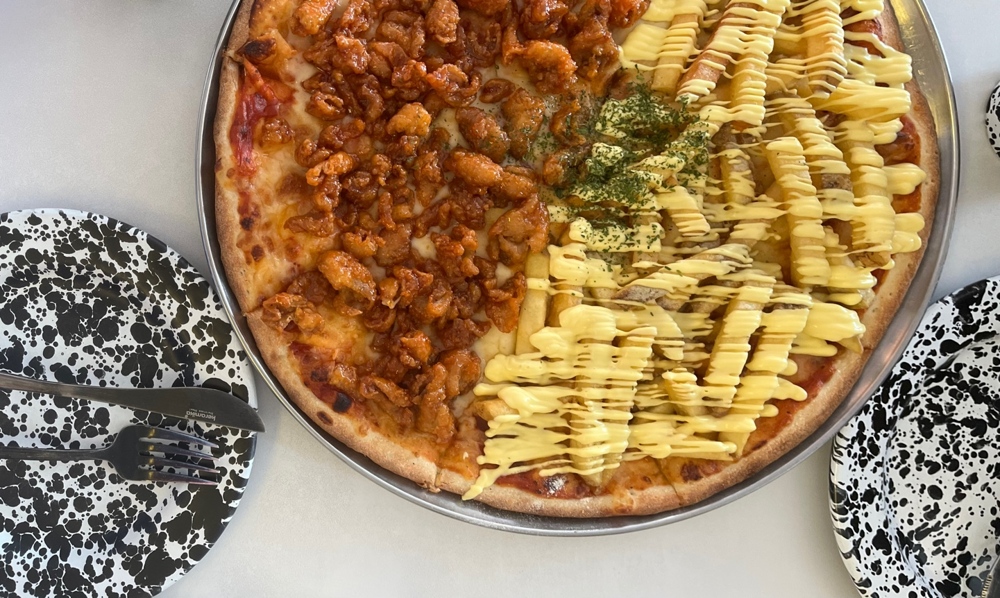
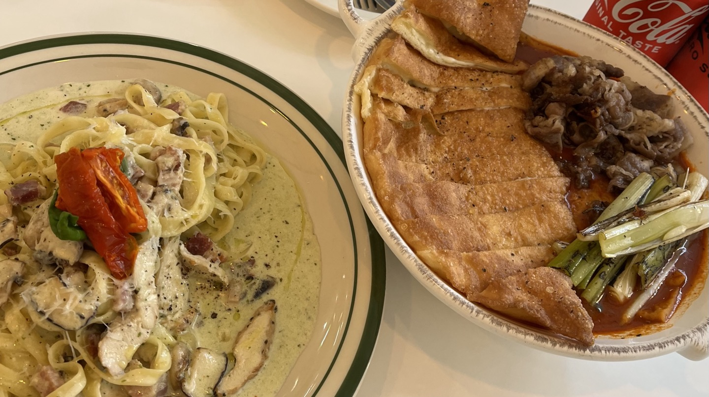
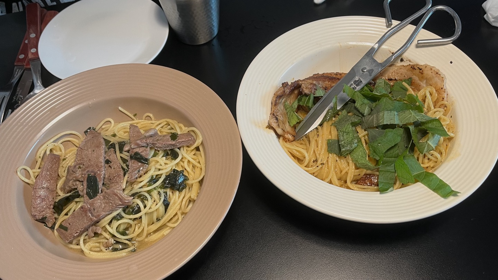

당신의 입맛을 사로잡을, 특별한 레스토랑!
랫댓 연남 
|  | ||
| 서울 마포구 동교로 243-4 2층 |
|||
| 연남 랫댓은 다양한 피자와 사이드를 파는 레스토랑입니다. 도우가 얆고 토핑이 푸짐해서 정말 짱입니다. 피자와 맥주를 함께 마시면 더 꿀맛! 피자는 반반으로 주문 가능하니, 친구와 취향껏 골라서 먹을 수 있습니다. 제 추천은 닭껍질 피자! 웨이팅이 기니 예약을 미리 하고 가는 것을 추천합니다. 반반피자-26,000원 닭껍질피자-24,000원 갈릭포테이토피자-24,000원
|
| 피클피클 익스프레스
|  | ||
| 서울 중구 을지로43길 38 1층 |
|||
| 피클피클 익스프레스는 파스타 전문점으로, 넓은 파스타면에 소스의 풍미가 가득 배어 제가 굉장히 좋아하는 레스토랑입니다. 특히 빤제로띠 우삼겹 떡볶이는 매콤한 떡볶이와 부드러운 치즈, 바삭한 빤제로띠의 조합이 짱짱! 양도 꽤 많았어요!! 로메스코 대파 파스타-16,500원 베이컨 크림 파스타-17,000원 볼로네제-17,500원 뻔제로띠 우삼겹 떡볶이-24,000원
|
| 아파스타먼 성수
|  | ||
| 서울 성동구 왕십리로10길 10 2.5층 |
|||
| 아파스타먼은 신박하고 특별한 파스타를 파는 레스토랑입니다. 제 추천은 쌈장 오일 파스타와 미역 오일 파스타! 자극적이지 않고 삼삼한 맛에, 쌈장과 미역 향이 파스타와 너무 잘 어울려서 평범한 파스타가 질렸다면 방문하기 좋은 곳입니다. 성수역보다는 뚝섬역에서 더 가까우니, 참고하세요. 쌈장 오일 파스타-16,900원 미역 오일 파스타-16,900원 마라크림 파스타-16,900원 성수 런치 제육 파스타-9,900원
|